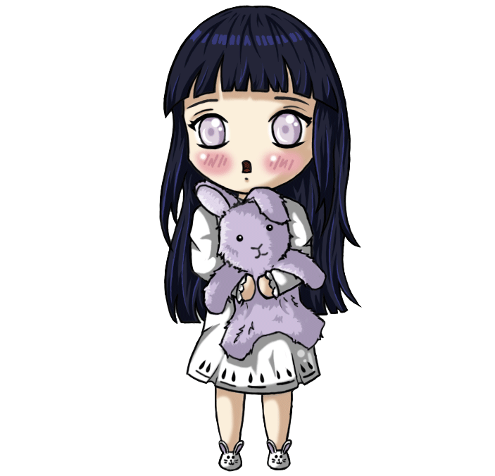
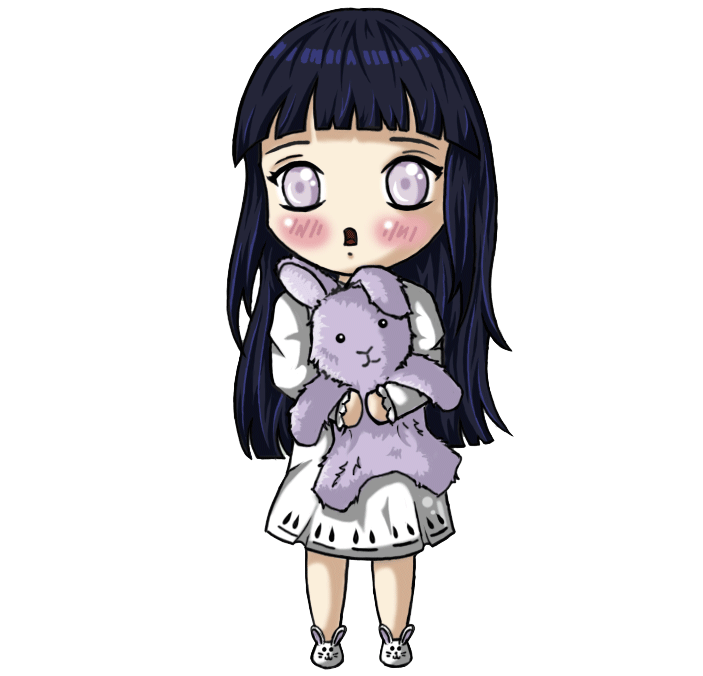

Prologue — Land of Waves (プロローグ~波の国, Purorōgu — Nami no Kuni), known as the Lands of Waves Escort Mission (波の国要人護衛, Nami no Kuni Yōjin Goei) in the anime, is an arc from Part I of the series. This arc sees the formation of Team 7 and the completion of their first mission to the Land of Waves. It spans through volumes 1 to 4,[1] or more specifically, covers chapters 1 to 33 of the manga and episodes 1 to 19 of the Naruto anime. This arc is followed by the Chūnin Exams.
The Chūnin Exams (中忍試験, Chūnin Shiken), known as the Chūnin Exams Preliminaries (中忍試験予選, Chūnin Shiken Yosen) and the Chūnin Exams Finals (中忍試験本選, Chūnin Shiken Honsen) in the anime, is an arc from Part I of the series. This arc sees Team 7's entrance into the Chūnin Exams and the introduction of such characters as the rest of the Rookie Nine, Team Guy, Three Sand Siblings and Orochimaru. It spans through volumes 4-13,[2] or more specifically, covers chapters 34 to 115 of the manga and episodes 20 to 67 of the Naruto anime. This arc is preceded by Prologue — Land of Waves and followed by Konoha Crush.
Konoha Crush (木ノ葉崩し, Konoha Kuzushi) is an arc from Part I of the series. This arc sees Orochimaru's attempt to destroy Konohagakure. It spans through volumes 13-16,[3] or more specifically, covers chapters 116 to 138 of the manga and episodes 68 to 80 of the Naruto anime. This arc is preceded by the Chūnin Exams and followed by the Search for Tsunade.
Search for Tsunade (綱手探索, Tsunade Tansaku) is an arc from Part I of the series. This arc sees the first appearance of Akatsuki as well as the competing attempts of Jiraiya and Orochimaru to recruit Tsunade. It spans through volumes 16 to 19,[4] or more specifically, covers chapters 139 to 171 of the manga and episodes 81 to 100 of the Naruto anime. This arc is preceded by the Konoha Crush. In the manga, it is followed by the Sasuke Recovery Mission, while in the anime, it is followed by the Land of Tea Escort Mission.
The Sasuke Recovery Mission (サスケ奪回任務, Sasuke Dakkai Ninmu), known as the Sasuke Uchiha Recovery (うちはサスケ奪回, Uchiha Sasuke Dakkai) and the Valley of the End (終末の谷, Shūmatsu no Tani) in the anime, is an arc from Part I of the series. This arc sees the attempt to stop Sasuke Uchiha from defecting to Orochimaru. It spans through volumes 20-27,[5] or more specifically, covers chapters 172 to 238 of the manga and episodes 107 to 135 of the Naruto anime. In the manga, this arc is preceded by the Search for Tsunade and followed by Kakashi Gaiden. In the anime, it is preceded by the Land of Tea Escort Mission and is followed by the Land of Rice Fields Investigation Mission.
In the anime, a number of additional episodes were added to the story to allow the manga a chance to get ahead. Some take place after the Search for Tsunade, but most occur after the Sasuke Recovery Mission. In total, these additional episodes last for almost two years. All feature Naruto Uzumaki assisting members of the Konoha 11 with a mission. The "arcs" that lasted two or more episodes are listed below:
| Characater Name | Arc in which Death occured | Place of Death | Killers | Cause of Death |
|---|---|---|---|---|
| Haku | Land of Waves | Naruto Bridge | Kakashi | Chidori |
| Gato | Land of Waves | Naruto Bridge | Zabuza | Kunai |
| Zabuza | Land of Waves | Naruto Bridge | Various HenchMan | Various Injuries |
| Shingure | Chunin Exam | Konohagakure | Gaara | Sand Waterfall Burial |
| Hayate Gekko | Chunin Exam | Konohagakure | Baki | Blade of Winds |
| Hiruzen Sarutobi | Konoha Arc | Chunin Exam Stadium | Himself | Dead Demon Consuming Seal |
| Aoi Rokusho | Land of Tea(Mission) | Land of Tea | Naruto Uzumaki | Rasengan |
| Kimimaro | Sasuke Recovery Mission | Land of Fire | Gaara | Death Sand Burial |
| Kamkiri | Land of rice fields Investigation Mission | Land of Sound | Arashi | Casuality puppet |